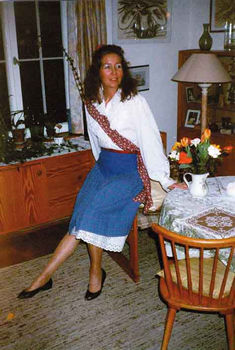
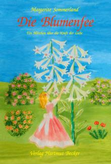

| 

Margerite Sommerland: Die Blumenfee
Ein Märchen über die Kraft der Liebe
Buchreihe:
Existenzielle Grundfragen/
Lebensgestaltung
2008, 16,5 x 24,0 cm,
237 Seiten, gebunden,
30 Farbbilder,
ISBN 978-3-929480-37-5
20,00 EUR [D]/36,00 sFr/
20,60 EUR [A]
Verlag
Hartmut Becker - Bücher zu Schlüsselfragen des Lebens
Eine Buchkritik:
"Beim Lesen dieses farbig illustrierten Buches tauchen wir
in eine Märchenwelt ein, die nicht ihresgleichen kennt.
Losgelöst von der schnöden, rauen und harten Realität
lernen wir die zarte Blumenfee kennen, die die Pflanzen und das
Leben in seiner ursprünglichen Vielfalt und Schönheit
liebt und beschützen möchte gegen alles, was Gewalt,
Ausbeutung, Rohheit und Verschmutzung bedeutet. Sie steht für
das Erhalten unserer Erde, der gesamten Schöpfung, und sie
kämpft gegen die Zerstörung und Unterwerfung der Welt
an, setzt ihr Sein, ihre Gaben und ihr Wirken als Blumenfee dagegen.
Wird sie das schaffen: sie, eine einzelne, kleine Kraft, die
sich für die Natur einsetzt, die Alternativen zur allgemeinen
Materialisierung und Technisierung des täglichen Lebens
aufzeigt ?
Das Märchen erzählt von einer einzigartigen Liebe,
die in ihrer Grossherzigkeit und Treue an Penelope aus der Odyssee
erinnert oder an die Solveig aus der Peer Gynt Suite.
Wie wird diese Geschichte enden ? Wird sie die Kraft und den
Mut haben, allen Widrigkeiten zu trotzen ?
Sehr beachtenswert finde ich in diesem Märchen das Hereinspielen
psychologischer Komponente, nämlich der Versuch, menschliches,
persönlich erlebtes Leid, aufzuarbeiten, Ungerechtigkeiten
herauszuschreien und nicht für immer still hinzunehmen...
"
|
|
Mein Name
ist Kersti Geiseler. Seit einigen Jahren wohne ich in Meersburg,
einem wunderschönen, malerischen Städtchen am Bodensee
mit der ältesten noch erhaltenen Burg Deutschlands, welche
nie erobert wurde. Im Sommer kommen viele Gäste her, um
sich zu erholen und die vielen Sehenswürdigkeiten am See
zu erleben.
Ich befasse mich mit Gestaltung in verschiedener Form: Seidenmalerei,
Holzschnittten und Porträtmalerei in Öl, als besonderes
Geschenk. - Wenn Sie mir das Foto eines Ihrer Lieben schicken,
entsteht davon in ein paar Wochen das fertige Porträt. Über
eine Nachricht von Ihnen würde ich mich sehr freuen.
Die Blumenfee
"Die Blumenfee" ist ein faszinierendes Märchen
über das größte Thema der Menschheit: die Kraft
der Liebe.
Es geht um zwei Personen: die märchenhafte, gefühlsbetonte
Blumenfee und den vor allem vernunftmäßig handelnden
Ritter. Sie waren noch Kinder, als sie sich zum ersten Mal begegneten
und noch nicht wussten, dass sie füreinander bestimmt waren.
Die Fee allerdings spürte immer sehnsuchtsvoller ihr Verlangen
nach dem Ritter. Doch auch als sie sich nach vielen Jahren wiedersahen,
erkannte der Ritter nicht sein Glück.
Viele erfreuliche wie auch erschreckende Erfahrungen müssen
die Fee und der Ritter durchleben, bis sie endlich ihre Liebe
und ihr Glück verwirklichen können. Doch dieser lange
Weg dient ihrer Reifung, lehrt sie, einander ihre Gefühle
zu zeigen, ihre Gemeinsamkeiten zu entdecken und ihre Verschiedenartigkeit
anzunehmen.
Die Schilderung der Blumenfee ist darüber hinaus ein Bekenntnis
zu einem liebevollen Umgang mit der Natur und unserer Umwelt.
Gleichzeitig eröffnet uns die Darlegung der Gedanken- und
Gefühlswelt der Blumenfee auch nachdenklich stimmende Einblicke
in Probleme unserer Zeit und übt Kritik an gesellschaftlichen
Zuständen. Auch hier werden Möglichkeiten positiver
Weiterentwicklung dargestellt. So erweist sich das Märchen
»Die Blumenfee« von Margerite Sommerland als einfühlsame,
fantasievolle, mitreißende und zugleich lehrreiche Geschichte
von großer sprachlicher Schönheit, die uns tiefe Einblicke
in die natürlichen Gesetzmäßigkeiten des Lebens
vermittelt.
Margerite Sommerland, geboren 1942 in Berlin, ausgebildet
als Lehrerin, Besuch der Staatlichen Hochschule für Musik
und Tanz Hannover (Tanz), Schule der Schönen Künste
Tunis, Unterrichtstätigkeit in Hamburg, Stuttgart und am
Goethe-Institut Tunis. Zahlreiche Aktivitäten in künstlerisch-kreativen
Bereichen wie Modedesign, Tanzaufführungen, Malerei, Grafik
und Dichtkunst.
|